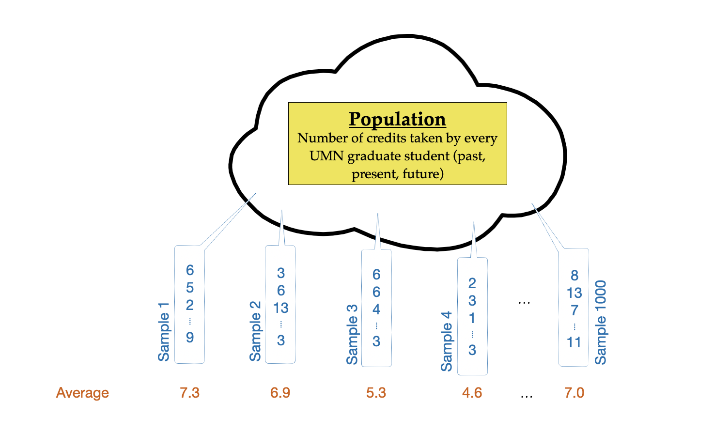
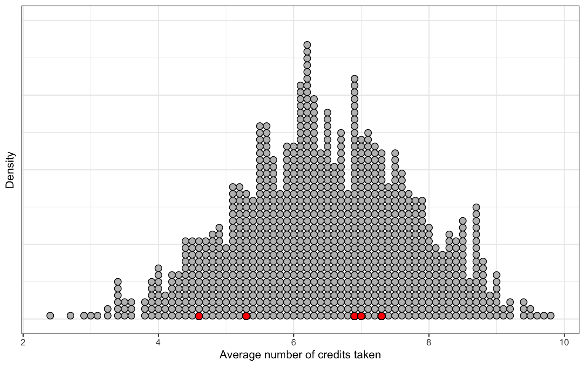

5 Simulation: Modeling Uncertainty
This chapter will introduce ideas of statistical uncertainty and how we can model that uncertainty using simulation.
5.1 Statistical Uncertainty
What if we want to determine whether the average number of credits taken by graduate students at the University of Minnesota (UMN) in their first semester is more than 6 credits (full-time status). In order to answer this question, we collect data on the number of credits taken in the first semester from 10 UMN graduate students. Computing the sample mean, we find that the average number of credits taken for these 10 students was 7.3. Based on this evidence, you might mistakenly think that we can conclude that the average number of credits taken by graduate students at the University of Minnesota in their first year IS more than 6 credits.
The issue with using the sample mean to drawing a conclusion about the mean number of credits taken by the larger population of UMN graduate students is that the sample is an incomplete picture of the larger population. This means that any estimate we obtain from the sample needs to account for this incompleteness or uncertainty.
In drawing inferences about the population from sample data one thing we have to do is try and quantify the amount of uncertainty in the sample estimate. This quantification has a direct influence on the answer to our question. For example, if we could say that the uncertainty in the sample mean estimate of 7.3 was within 0.6 of a credit, this would mean that we think the average number of credits taken in the first semester by all UMN graduate students is between 6.7 and 7.9. After accounting for the uncertainty, we can infer that the average number of credits taken in the first semester by all UMN graduate students IS likely more than 6 credits. If however, we found the uncertainty in the estimate was 1.4, then our estimate for the average number of credits taken in the first semester by all UMN graduate students is between 5.9 and 8.7. In this case, we would not be able to say that the average number of credits taken in the first semester by all UMN graduate students is more than 6 credits—it might be less.
If you have data for the entire population you want to draw conclusions about, then you have a complete picture and there is no uncertainty in the numerical summary you compute for this population.
5.1.1 Sources of Uncertainty
Why does incomplete data lead to uncertainty? It turns out, there are several sources of uncertainty, the most common of which are:
- Sampling variation (a.k.a, sampling error); and
- Measurement variation (a.k.a., measurement error)
Sampling variation is the idea that different samples that can be drawn from the same population produce different estimates.
For example, what if if we had drawn a different sample of 10 UMN graduate students. The number of credits that those students took in their first semester would likely be different than our original 10 students, which means that their average would also be different than the original average of 7.3. That is, the uncertainty in the estimate is a function of the random nature of the sampling.
Another source of uncertainty in estimates is imperfect measurement, or measurement error. This arises most often when the constructs we are measuring can not be directly observed (i.e., they are latent) and we have to use proxies of these construct in our analysis. For example, a researcher may be interested in studying depression in teenagers and uses the Beck Depression Inventory (BDI) to get a measure of “depression” for teens in their sample. Despite having good psychometric properties (e.g., reliability) the measure produced by the BDI are imperfect measures of depression. Further, if we compute a numerical summary, say the mean, from scores that are imperfect measures, then that mean will also be an uncertain estimate not only because of sampling error, but also because of the measurement error inherent in its computation.
In practice, despite these being very different sources of variation, measurement error and sampling error are often combined and treated as if all of the uncertainty was due to sampling error. This
EPsy 5261, we will focus on quantifying uncertainty via estimating the sampling variation/sampling error. You can learn more about how to compute and account for measurement error in courses like EPsy 5221: Priciples of Educational and Psychological Measurment.
5.1.2 Sampling Error
To give you a better sense of sampling error and the methods we use to quantify sampling error, consider the following scenario. Imagine the population of number of credits taken for every UMN graduate student (past, present, and future) during the first semester. There would be an infinite number of these values (i.e., credits taken), but theoretically, we could plot all of these values, compute numerical summaries such as the mean and standard deviation of these values. (The mean of this distribution is what we are trying to estimate using our sample data.)
The conceptual idea of estimating sampling variation is that we are going to draw a sample of 10 students and compute the mean of the sample. Then we are going to repeat this process again, and again, each time drawing 10 observations and computing the mean. Figure 5.1 shows a visual depiction of this thought experiment that was carried out 1000 times.
The 1000 sample means can then be plotted, and we can compute a numeric summary of the variability in the distribution of sample means.
── Attaching core tidyverse packages ──────────────────────── tidyverse 2.0.0 ──
✔ dplyr 1.1.1 ✔ readr 2.1.4
✔ forcats 1.0.0 ✔ stringr 1.5.0
✔ ggplot2 3.4.2 ✔ tibble 3.2.1
✔ lubridate 1.9.2 ✔ tidyr 1.3.0
✔ purrr 1.0.1
── Conflicts ────────────────────────────────────────── tidyverse_conflicts() ──
✖ dplyr::filter() masks stats::filter()
✖ dplyr::lag() masks stats::lag()
ℹ Use the conflicted package (<http://conflicted.r-lib.org/>) to force all conflicts to become errors
5.2 Importing the Data
To illustrate how we can summarize and visualize quantitative attributes using R, we will again use the college-scorecard.csv data. As a reminder, we will start by loading three libraries, {tidyverse}, {ggformula}, and {mosaicCore}. Then we will import the college scorecard data using the read_csv() function and assign the data into an object called colleges. Finally, we view the data to make sure it read in properly.
library(ggformula)
library(mosaicCore)
library(tidyverse)
# Import data
colleges <- read_csv("https://raw.githubusercontent.com/zief0002/epsy-5261/main/data/college-scorecard.csv")
# View data
collegesRecall that in these data each case in these data is an institution of higher education and there are 234 institutions in our sample. This dataset has several quantitative attributes, including: admission rate, number of undergraduate students, median debt for all students, median debt for graduates, and median earnings.